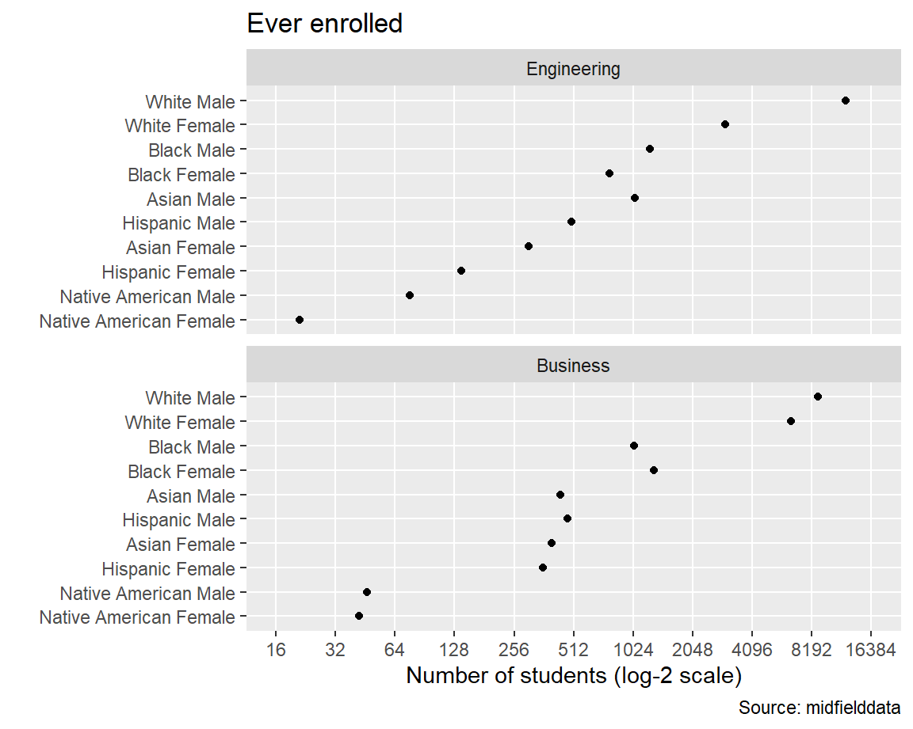

In this exercise, we illustrate using a number of midfieldr functions to access midfielddata student records, condition, group, and summarize the data, and graph a result. For simplicity in this first example, we compare Engineering and Business by the number of students ever enrolled, grouped by sex and race/ethnicity.
midfieldr functions used:
Instructional programs are encoded by a 6-digit CIP code. get_cip() accesses the cip data set and retrieves all the 6-digit codes that satisfy stated conditions. In this case, we want all codes that start with 14 (engineering) and 52 (business).
Users are not expected to know their CIP codes. Search strategies using get_cip() are described in the Explore program CIP codes vignette (link). Program labeling options using label_programs() are described in the Gather programs vignette (link).
# engineering engineering_cip <- get_cip(cip, keep_any = "^14") engineering <- label_programs(engineering_cip, label = "Engineering") # examine the result engineering #> cip6 cip6name #> 1: 140101 Engineering, General #> 2: 140102 Pre-Engineering #> 3: 140201 Aerospace, Aeronautical and Astronautical, Space Engineering #> 4: 140301 Agricultural, Biological Engineering and Bioengineering #> 5: 140401 Architectural Engineering #> --- #> 52: 144401 Engineering Chemistry #> 53: 144501 Biological, Biosystems Engineering #> 54: 149999 Engineering, Other #> 55: 14XXXX NonIPEDS - First-Year Engineering Program #> 56: 14YYYY NonIPEDS - Undesignated Engineering #> program #> 1: Engineering #> 2: Engineering #> 3: Engineering #> 4: Engineering #> 5: Engineering #> --- #> 52: Engineering #> 53: Engineering #> 54: Engineering #> 55: Engineering #> 56: Engineering
Repeat for business and bind the two data frames.
# business business_cip <- get_cip(cip, keep_any = "^52") business <- label_programs(business_cip, label = "Business") # bind the two data frames program_group <- rbind(engineering, business) # examine the result program_group #> cip6 cip6name #> 1: 140101 Engineering, General #> 2: 140102 Pre-Engineering #> 3: 140201 Aerospace, Aeronautical and Astronautical, Space Engineering #> 4: 140301 Agricultural, Biological Engineering and Bioengineering #> 5: 140401 Architectural Engineering #> --- #> 146: 521910 Hospitality and Recreation Marketing Operations #> 147: 521999 Specialized Merchandising, Sales and Marketing Operations, Other #> 148: 522001 Construction Management #> 149: 522101 Telecommunications Management #> 150: 529999 Business, Management, Marketing and Related Support Services, Other #> program #> 1: Engineering #> 2: Engineering #> 3: Engineering #> 4: Engineering #> 5: Engineering #> --- #> 146: Business #> 147: Business #> 148: Business #> 149: Business #> 150: Business
We can dispense with the cip6names column, keeping the program column for joining, grouping, and summarizing.
# verbose column can be deleted program_group[, cip6name := NULL] # examine the result program_group #> cip6 program #> 1: 140101 Engineering #> 2: 140102 Engineering #> 3: 140201 Engineering #> 4: 140301 Engineering #> 5: 140401 Engineering #> --- #> 146: 521910 Business #> 147: 521999 Business #> 148: 522001 Business #> 149: 522101 Business #> 150: 529999 Business
We extract the cip6 column as a character vector to gather student data.
# extract a vector of 6-digit CIP codes group_codes <- program_group$cip6 # examine the result str(group_codes) #> chr [1:150] "140101" "140102" "140201" "140301" "140401" "140501" "140601" ...
The number of unique programs in this group is 150.
get_enrollees() accesses the midfieldterms data set using the 6-digit CIP codes in group_codes to obtain the IDs of all students ever enrolled in these programs.
# extract students ever enrolled enrollees <- get_enrollees(midfieldterms, codes = group_codes) # examine the result enrollees #> id cip6 #> 1: MID25783135 520101 #> 2: MID25783162 14XXXX #> 3: MID25783162 520301 #> 4: MID25783162 521401 #> 5: MID25783166 14XXXX #> --- #> 50961: MID26697484 521401 #> 50962: MID26697576 520301 #> 50963: MID26697576 521401 #> 50964: MID26697599 521201 #> 50965: MID26697685 521201
The output shows that we have 50,965 unique combinations of student and program.
For some of these students, completing their program may not be feasible given the range of data available. completion_feasible() subsets the enrollees IDs, retaining those who matriculate at least six years before the last term in the data.
# apply the feasible completion filter feasible_ids <- completion_feasible(id = enrollees$id) # subset the enrollees rows_we_want <- enrollees$id %in% feasible_ids enrollees <- enrollees[rows_we_want] # examine the result enrollees #> id cip6 #> 1: MID25783135 520101 #> 2: MID25783162 14XXXX #> 3: MID25783162 520301 #> 4: MID25783162 521401 #> 5: MID25783178 140701 #> --- #> 39847: MID26697471 520201 #> 39848: MID26697484 521401 #> 39849: MID26697576 520301 #> 39850: MID26697576 521401 #> 39851: MID26697599 521201
The number of students has dropped to 39,851. Our approach to determining completion feasibility using completion_feasible() is described in the Filter for program completion feasibility vignette (link).
get_race_sex() accesses the midfieldstudents data set using the student IDs in feasible_ids to obtain students’ race/ethnicity and sex as self-reported at matriculation.
# obtain student race/ethnicity and sex demographics <- get_race_sex(midfieldstudents, keep_id = feasible_ids) # examine the result demographics #> id race sex #> 1: MID25783135 White Male #> 2: MID25783162 White Male #> 3: MID25783178 Black Male #> 4: MID25783195 White Male #> 5: MID25783197 White Male #> --- #> 28088: MID26697449 White Female #> 28089: MID26697471 Black Female #> 28090: MID26697484 White Female #> 28091: MID26697576 Asian Male #> 28092: MID26697599 White Male
Join the race/ethnicity and sex data frame to the enrollees data frame by id. Then join the program names from program_group to our working data frame by cip6.
# left-join demographics to enrollees enrollees <- merge(enrollees, demographics, by = "id", all.x = TRUE) # left-join program_group to enrollees enrollees <- merge(enrollees, program_group, by = "cip6", all.x = TRUE) # examine the result enrollees #> cip6 id race sex program #> 1: 140101 MID25853474 Other Male Engineering #> 2: 140101 MID25864225 White Female Engineering #> 3: 140101 MID25864273 Asian Male Engineering #> 4: 140101 MID25864554 White Male Engineering #> 5: 140101 MID25864996 Asian Male Engineering #> --- #> 39847: 529999 MID26356699 International Male Business #> 39848: 529999 MID26356852 White Female Business #> 39849: 529999 MID26357196 White Female Business #> 39850: 529999 MID26357287 White Male Business #> 39851: 529999 MID26357906 White Male Business
To frame our results in terms of program, race/ethnicity, and sex, we group by these variables and count the number of students in each grouping using syntax from the data.table package. The count is assigned to the new ever column.
# assign variables to aggregate by grouping_variables <- c("program", "race", "sex") # aggregation using data.table syntax grouped_enrollees <- enrollees[, .(ever = .N), by = grouping_variables] # examine the result grouped_enrollees #> program race sex ever #> 1: Engineering Other Male 229 #> 2: Engineering White Female 2985 #> 3: Engineering Asian Male 1045 #> 4: Engineering White Male 12132 #> 5: Engineering Black Female 775 #> --- #> 28: Business Hispanic Female 357 #> 29: Business Unknown Male 67 #> 30: Business International Male 119 #> 31: Business Native American Female 42 #> 32: Business Native American Male 46
Note the change in the size of the data frame, from 39,851 in enrollees where every row is a student to 32 in the grouped_enrollees below where every row is a group.
To prepare the results for graphing, we construct a “pre-multiway” version of the data frame. We begin by removing ambiguous levels of race/ethnicity.
# initialize the pre-multiway data frame pre_mw <- grouped_enrollees # remove ambiguous levels of race/ethnicity rows_we_want <- !pre_mw$race %in% c("Unknown", "International", "Other") pre_mw <- pre_mw[rows_we_want] # examine the result unique(pre_mw$race) #> [1] "White" "Asian" "Black" "Hispanic" #> [5] "Native American"
To protect confidentiality, we omit observations with 10 or fewer students ever enrolled.
# protect confidentiality of small populations rows_we_want <- pre_mw$ever > 10 pre_mw <- pre_mw[rows_we_want] # examine the result pre_mw[order(program, race, sex)] #> program race sex ever #> 1: Business Asian Female 396 #> 2: Business Asian Male 438 #> 3: Business Black Female 1303 #> 4: Business Black Male 1034 #> 5: Business Hispanic Female 357 #> 6: Business Hispanic Male 476 #> 7: Business Native American Female 42 #> 8: Business Native American Male 46 #> 9: Business White Female 6429 #> 10: Business White Male 8777 #> 11: Engineering Asian Female 302 #> 12: Engineering Asian Male 1045 #> 13: Engineering Black Female 775 #> 14: Engineering Black Male 1241 #> 15: Engineering Hispanic Female 138 #> 16: Engineering Hispanic Male 498 #> 17: Engineering Native American Female 21 #> 18: Engineering Native American Male 76 #> 19: Engineering White Female 2985 #> 20: Engineering White Male 12132
In intersectional studies, we have found combined race/ethnicity and sex to be a useful category. We unite two columns to create the race_sex column.
# create a new category pre_mw[, race_sex := paste(race, sex, sep = " ")] # examine the result pre_mw[order(program, race_sex)] #> program race sex ever race_sex #> 1: Business Asian Female 396 Asian Female #> 2: Business Asian Male 438 Asian Male #> 3: Business Black Female 1303 Black Female #> 4: Business Black Male 1034 Black Male #> 5: Business Hispanic Female 357 Hispanic Female #> 6: Business Hispanic Male 476 Hispanic Male #> 7: Business Native American Female 42 Native American Female #> 8: Business Native American Male 46 Native American Male #> 9: Business White Female 6429 White Female #> 10: Business White Male 8777 White Male #> 11: Engineering Asian Female 302 Asian Female #> 12: Engineering Asian Male 1045 Asian Male #> 13: Engineering Black Female 775 Black Female #> 14: Engineering Black Male 1241 Black Male #> 15: Engineering Hispanic Female 138 Hispanic Female #> 16: Engineering Hispanic Male 498 Hispanic Male #> 17: Engineering Native American Female 21 Native American Female #> 18: Engineering Native American Male 76 Native American Male #> 19: Engineering White Female 2985 White Female #> 20: Engineering White Male 12132 White Male
Multiway data are characterized by two categorical variables and one quantitative variable (Cleveland, 1993). In this example, the two categories are program and race/ethnicity/sex and the quantitative variable is the number of students ever enrolled.
To structure the data in multiway form, we select the three multiway variables.
# select the three multiway variables columns_we_want <- c("program", "race_sex", "ever") pre_mw <- pre_mw[, ..columns_we_want] # examine the result pre_mw[order(program, race_sex)] #> program race_sex ever #> 1: Business Asian Female 396 #> 2: Business Asian Male 438 #> 3: Business Black Female 1303 #> 4: Business Black Male 1034 #> 5: Business Hispanic Female 357 #> 6: Business Hispanic Male 476 #> 7: Business Native American Female 42 #> 8: Business Native American Male 46 #> 9: Business White Female 6429 #> 10: Business White Male 8777 #> 11: Engineering Asian Female 302 #> 12: Engineering Asian Male 1045 #> 13: Engineering Black Female 775 #> 14: Engineering Black Male 1241 #> 15: Engineering Hispanic Female 138 #> 16: Engineering Hispanic Male 498 #> 17: Engineering Native American Female 21 #> 18: Engineering Native American Male 76 #> 19: Engineering White Female 2985 #> 20: Engineering White Male 12132
The second attribute of multiway data is that the levels of the categories are ordered by the median value of the quantitative variable. order_multiway() converts the categorical variables to factors and orders the category levels.
# order the category levels data_mw <- order_multiway(pre_mw)
The median values are attributes of the data frame. We can view them as follows. Note that program and race_sex are now factors ordered by the median enrolled numbers (recorded under the scores attribute).
sapply(data_mw, FUN = attributes) #> $program #> $program$levels #> [1] "Business" "Engineering" #> #> $program$class #> [1] "factor" #> #> $program$scores #> Business Engineering #> 457.0 636.5 #> #> #> $race_sex #> $race_sex$levels #> [1] "Native American Female" "Native American Male" "Hispanic Female" #> [4] "Asian Female" "Hispanic Male" "Asian Male" #> [7] "Black Female" "Black Male" "White Female" #> [10] "White Male" #> #> $race_sex$class #> [1] "factor" #> #> $race_sex$scores #> Asian Female Asian Male Black Female #> 349.0 741.5 1039.0 #> Black Male Hispanic Female Hispanic Male #> 1137.5 247.5 487.0 #> Native American Female Native American Male White Female #> 31.5 61.0 4707.0 #> White Male #> 10454.5 #> #> #> $ever #> NULL
Multiway data and graphs and order_multiway() are described in more detail in the Explore multiway data vignette (link).
We use ggplot2 to graph the multiway data. Rows and panels, from top to bottom, are ordered by decreasing medians. We use a logarithmic scale because the numbers differ by orders of magnitude. In a log base-2 scale, every grid line represents a doubling of the previous grid line.
ggplot(data = data_mw, mapping = aes(x = ever, y = race_sex)) + facet_wrap(facets = vars(program), ncol = 1, as.table = FALSE) + geom_point(na.rm = TRUE) + scale_x_continuous(trans = "log2", breaks = 2^seq(4, 14), limits = 2^c(4, 14)) + theme(panel.grid.minor.x = element_blank()) + labs(x = "Number of students (log-2 scale)", y = "", title = "Ever enrolled", caption = "Source: midfielddata")

The vignette code chunks are collected below in a single, condensed script.
# packages used library(midfieldr) library(midfielddata) library(data.table) library(ggplot2) # gather the programs engineering_cip <- get_cip(cip, keep_any = "^14") engineering <- label_programs(engineering_cip, label = "Engineering") business_cip <- get_cip(cip, keep_any = "^52") business <- label_programs(business_cip, label = "Business") program_group <- rbind(engineering, business) program_group[, cip6name := NULL] # extract a vector of 6-digit CIP codes group_codes <- program_group$cip6 # gather students ever enrolled with feasible program completion enrollees <- get_enrollees(midfieldterms, codes = group_codes) feasible_ids <- completion_feasible(id = enrollees$id) rows_we_want <- enrollees$id %in% feasible_ids enrollees <- enrollees[rows_we_want] demographics <- get_race_sex(midfieldstudents, keep_id = feasible_ids) enrollees <- merge(enrollees, demographics, by = "id", all.x = TRUE) enrollees <- merge(enrollees, program_group, by = "cip6", all.x = TRUE) # group and count grouping_variables <- c("program", "race", "sex") grouped_enrollees <- enrollees[, .(ever = .N), by = grouping_variables] # condition the data for display pre_mw <- grouped_enrollees rows_we_want <- !pre_mw$race %in% c("Unknown", "International", "Other") pre_mw <- pre_mw[rows_we_want] rows_we_want <- pre_mw$ever > 10 pre_mw <- pre_mw[rows_we_want] pre_mw[, race_sex := paste(race, sex, sep = " ")] columns_we_want <- c("program", "race_sex", "ever") pre_mw <- pre_mw[, ..columns_we_want] # complete the transformation to multiway form data_mw <- order_multiway(pre_mw) # graph results ggplot(data = data_mw, mapping = aes(x = ever, y = race_sex)) + facet_wrap(facets = vars(program), ncol = 1, as.table = FALSE) + geom_point(na.rm = TRUE) + scale_x_continuous(trans = "log2", breaks = 2^seq(4, 14), limits = 2^c(4, 14)) + theme(panel.grid.minor.x = element_blank()) + labs(x = "Number of students (log-2 scale)", y = "", title = "Ever enrolled", caption = "Source: midfielddata")